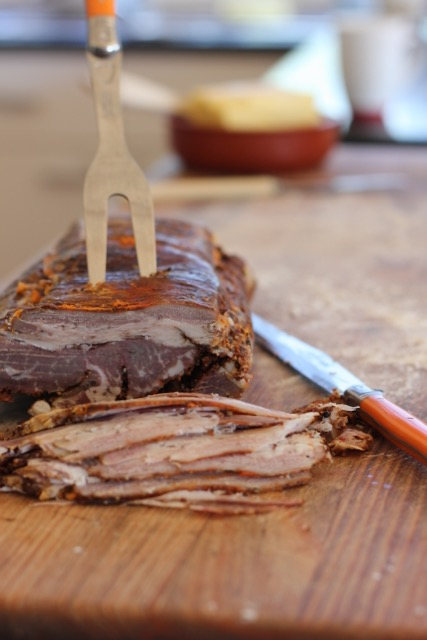

Homemade Pastrami
Hand on heart, I can put down our impulse to buy this beautiful place to two people: Hugh Fearnley-Whittingstall and Dick Strawbridge. We made this pastrami recipe from Dick's adorable curing and smoking book he wrote with his son, and I thoroughly encourage all of you to GO BUY IT.
It's basically just three steps once you have your brisket
- Cure it with salt and sugar and flavours (about a week or two)
- Crumb it in more flavours and smoke it super slowly for a few hours
- Steam it on super low in the oven
I take it back - there is a fourth step, which is ENJOY LOVINGLY and impress your friends. We thoroughly encourage pairing it with a fresh poached egg on a crumpet in the morning, or with avo on toast.
